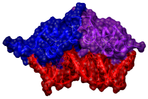

Research
Cell type-specific transcriptional networks underlie virtually every aspect of metazoan physiology and homeostasis. Single transcription factors govern distinct gene regulatory networks in different cells types. A challenge in the field is determining the mechanisms whereby this remarkable specificity arises and how the gene regulatory network remains flexible to respond to environmental and physiological fluctuations. It is almost certain that combinatorial regulation underpins this metazoan cell-type specific transcription. Transcription factors must integrate information from co-regulators, chromatin environment, post-translational modifications, and in certain cases ligand chemistry, to elicit specific transcriptional programs. Through these studies, we anticipate to gain insight into the fundamental principles of metazoan transcriptional regulation.
Our lab uses a diverse array of techniques to approach the following challenges in the transcriptional field:
- How ubiquitously expressed NHRs generate exquisitely cell-type and tissue-specific patterns of gene regulation?
- How NHRs integrate information from ligands, co-regulators, post-translational modifications, and chromatin environment?
- How NHR target genes regulate physiology and homeostasis in living animals?
- Developing new tools & approaches to discover novel NHR ligands
- Breaking down transcriptional regulation into a series of discrete, assayable biochemical steps
- Developing methods to analyze high-throughput sequencing data

Methods
To address these questions, we use employ biochemical, cellular, molecular, genetic and structural approaches in human cell culture, C. elegans, yeast, and in vitro to investigate IR functions and mechanisms.
- Biochemistry (Affinity studies, in vitro enzymatic assays)
- Cell culture (transfections, RNAi, luciferase reporters, hormone treatment)
- Structural biology (CryoEM, hydrogen-deuterium exchange, NMR)
- C. elegans genetics (forward and reverse genetics, CRISPR)
- Phage display to detect/investigate specific induced functional surfaces
- Next generation sequencing (RNA-seq, ChIP-seq, Phage-seq)
- Bioinformatics with existing data (included in-house data on gene regulation and promoter occupancy data for different cell lines and GR mutations)
- Molecular Biology (qPCR, reporter assays, CRISPR, Y1H and Y2H)
- Microscopy (DIC, Confocal, epifluorescence)